Which question does DNS answer?
- Transport layer.
- Routing.
- Name resolution.
- That is ARP.
The Domain Name System: why names, the hierarchical name space and its labels, domains, FQDN vs. PQDN, name servers (root, primary, secondary, zone transfer, caching), and recursive vs. iterative resolution, traced step by step for lab.CS.PSU.EDU.SA looking up sales.mcgraw.com. Rebuilt from the highlighted copy of the deck until a clean one is uploaded.
Every original slide is shown unchanged. Yellow marks on a slide point to a numbered note: hover or tap a mark to jump to its note, and hover a note to see its marks. Questions tagged Past exam appeared on a real paper; Prediction questions are likely angles, not confirmed. Pick an answer to each question: a wrong pick tells you why it is wrong, so you can try again.
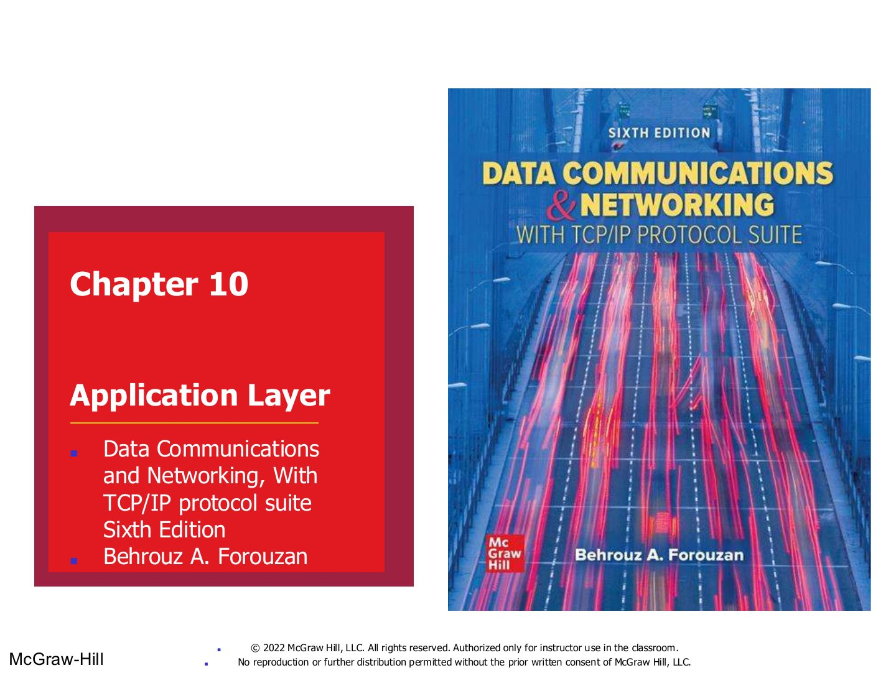
This deck is about one application-layer service, DNS, the Domain Name System. It covers why we need names, how the name space is organised as a tree of labels, what domains, FQDNs and PQDNs are, how the database is spread across a hierarchy of name servers (root, primary and secondary servers, caching), and the two ways a name is resolved: recursive and iterative. The recursive vs. iterative comparison is the most likely written question.
Which question does DNS answer?
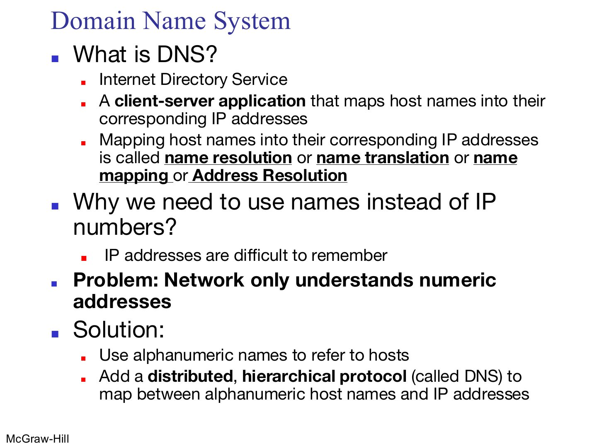
DNS is the Internet’s directory service: a client-server application that maps host names (like www.psu.edu.sa) to their IP addresses. This mapping is called name resolution (also name translation, name mapping or address resolution; don’t confuse it with ARP, which maps IP addresses to MAC addresses).
Why use names at all? Because IP addresses are hard to remember: people remember google.com, not 142.250.185.46. Names also stay the same when a server moves to a new address. The problem is that the network itself only understands numeric addresses. The solution: let people use alphanumeric names, and add a distributed, hierarchical protocol, DNS, that maps between names and IP addresses whenever a program needs to contact a host.
Seen again Ch 7, slide 62: Every host is configured with a DNS server address
Mapping a host name to its IP address is called:
DNS is a client-server application.
Why does the Internet use names on top of IP addresses?
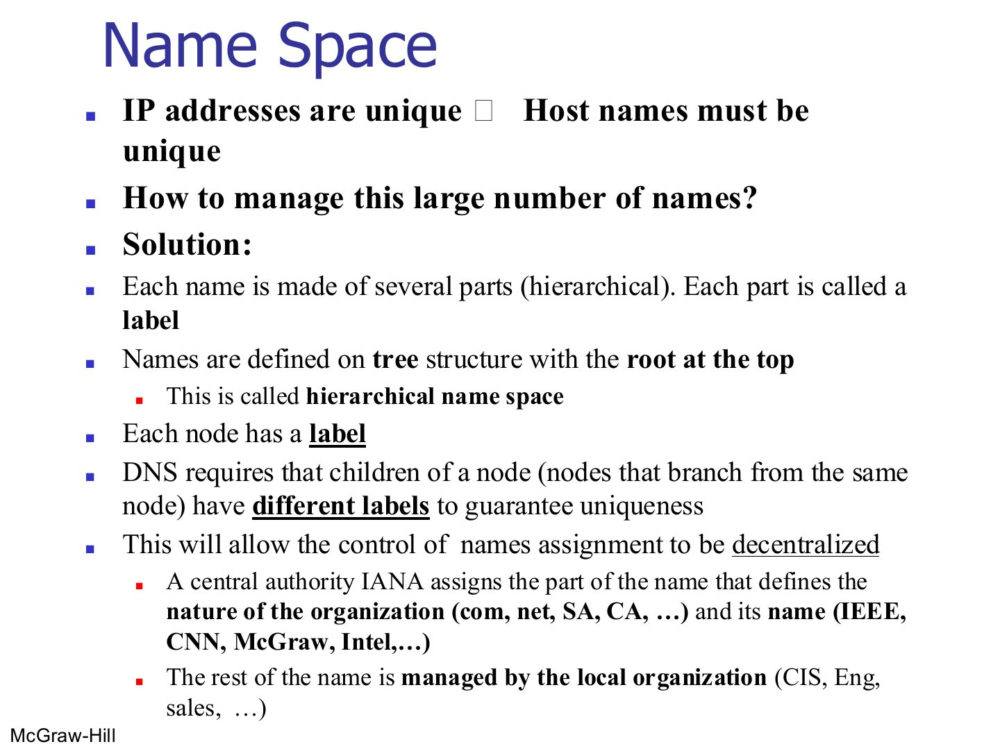
IP addresses are unique, so host names must be unique too. With billions of hosts, one flat list of names would be impossible to manage. The solution: each name is made of several parts, and each part is called a label.
The names form a tree with the root at the top: this is the hierarchical name space. Every node in the tree has a label, and DNS requires that children of the same node have different labels. That rule guarantees every full name is unique: two hosts can both be called “www” as long as they sit under different parents.
The hierarchy also lets name assignment be decentralised. A central authority, IANA, controls the top part of the name, which says what kind of organisation it is (com, net, sa, ca…), and the organisation’s name (ieee, cnn, intel…). Each organisation then manages the rest of its names itself (cis, eng, sales…) without asking anyone.
Children of the same node in the DNS tree must:
Why is DNS name assignment decentralised?
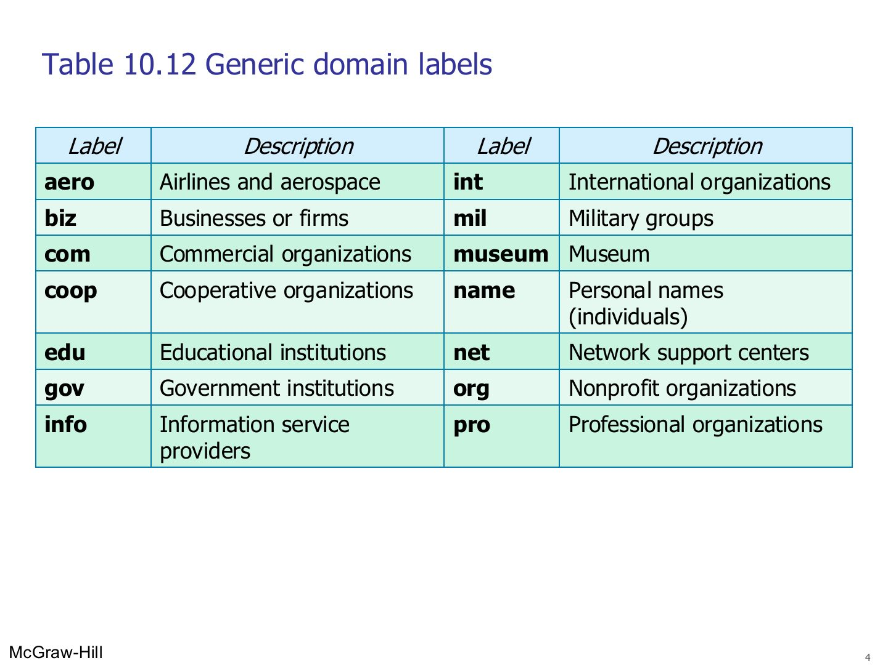
The generic top-level domain labels describe the type of organisation: com (commercial), edu (education), gov (government), mil (military), org (non-profit), net (network support centres), int (international organisations), plus aero, biz, coop, info, museum, name (individuals) and pro (professionals). The other kind of top-level domain is the country domain: sa, us, jp and so on.
The generic label for nonprofit organizations is:
“sa” in psu.edu.sa is a:
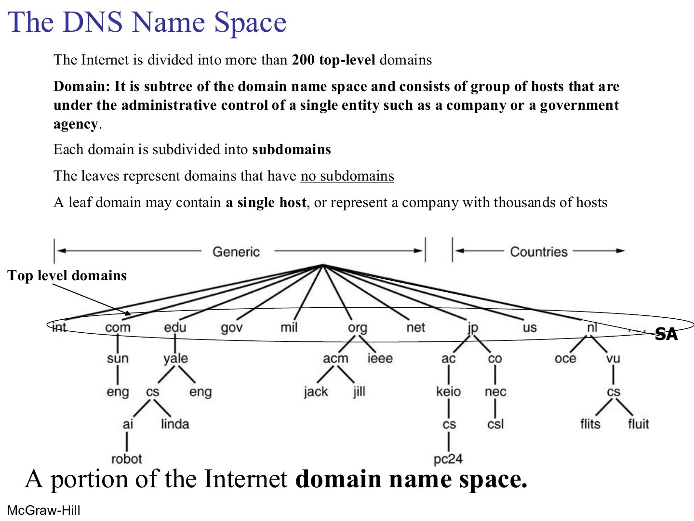
The Internet is divided into more than 200 top-level domains. A domain is a subtree of the name space: a group of hosts under the administrative control of one single entity, such as a company or a government agency. Each domain is divided into subdomains, and those can be divided again. The leaves of the tree are domains with no subdomains: a leaf can be a single host, or it can stand for a company with thousands of hosts.
A domain is:
A leaf domain can represent:
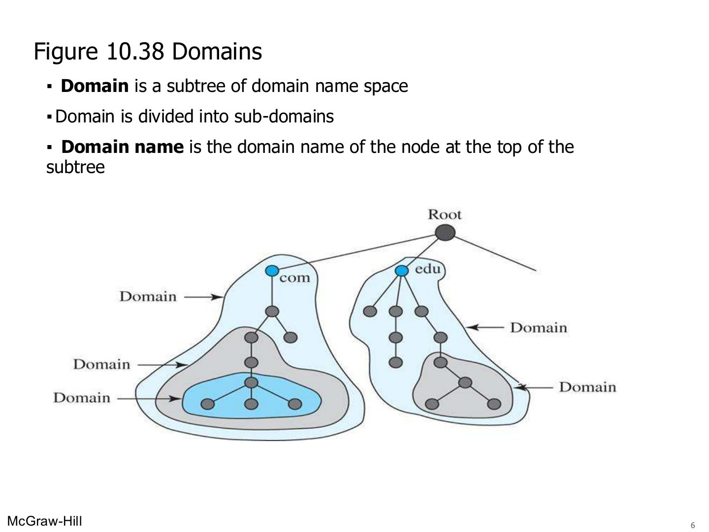
A domain is any subtree of the name space, and it can contain smaller domains (subdomains). The domain name is the name of the node at the top of that subtree: the subtree under “edu” is the edu domain, and inside it, the subtree under “psu” is the psu.edu domain.
The name of a domain is:
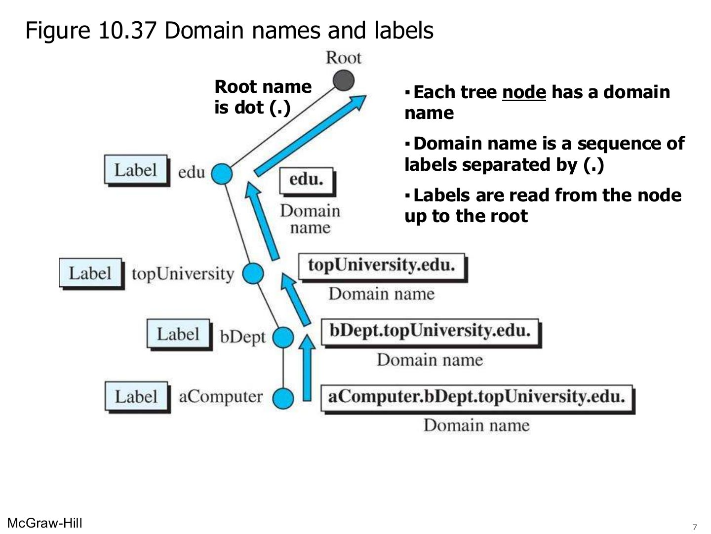
Every node in the tree has a domain name: the sequence of labels separated by dots, read from the node up to the root. For the node aComputer under bDept under topUniversity under edu, the name is aComputer.bDept.topUniversity.edu. The final dot stands for the root, whose label is empty. So the rightmost label (before the root) is the top-level domain.
In the name sales.mcgraw.com., the top-level domain is:
Labels in a domain name are read:
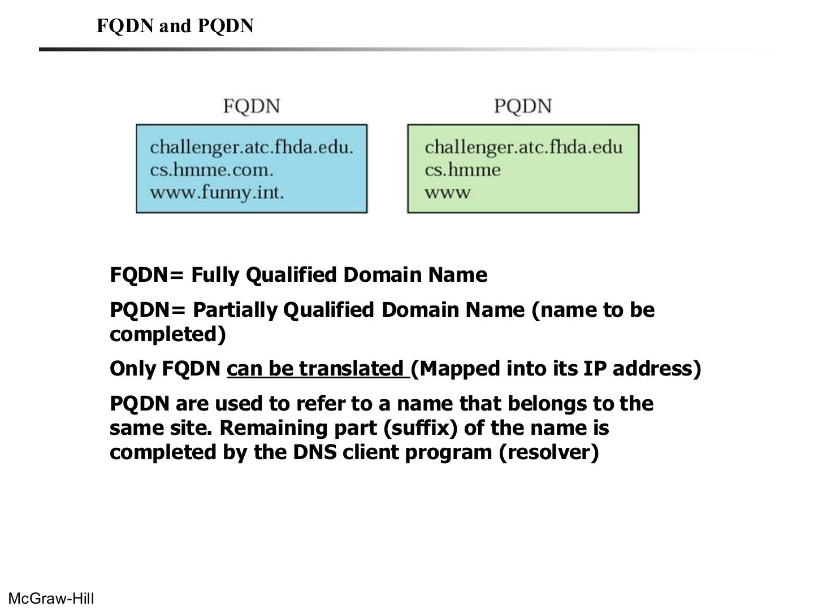
An FQDN (fully qualified domain name) is the complete name, going all the way to the root, and so ending with a dot: challenger.atc.fhda.edu. Only an FQDN can be translated into an IP address, because only the full name identifies one node unambiguously. A PQDN (partially qualified domain name) is an incomplete name, such as “www” or “cs.hmme”, used to refer to a host at the same site. When a user types a PQDN, the DNS client (the resolver) completes it by adding the local suffix (for example “.psu.edu.sa.”) before looking it up. That is why you can often type just a short name inside an organisation.
Memory trick Fully qualified = goes all the way to the root (the final dot).
Which name can be mapped directly to an IP address?
A PQDN is completed by the resolver on the client.
How can you tell an FQDN?
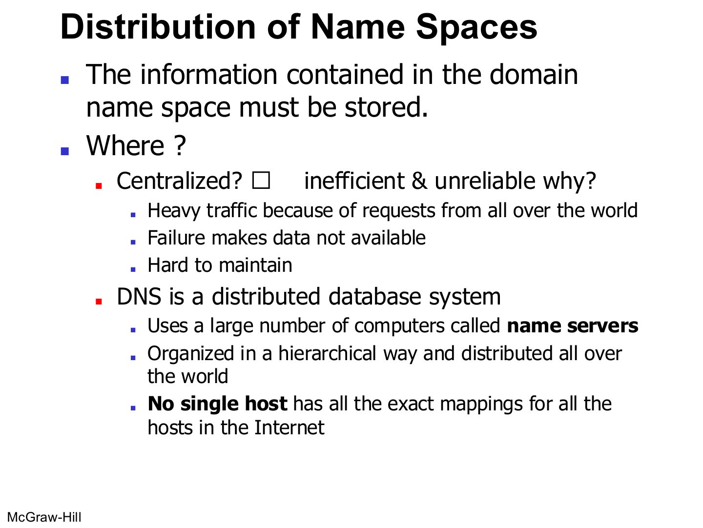
Where should all these names and addresses be stored? One central server would be inefficient and unreliable: it would receive heavy traffic from requests all over the world, its failure would make every name unavailable, and it would be hard to maintain.
So DNS is a distributed database: the information is spread over a large number of computers called name servers, organised hierarchically and located all over the world. No single host holds all the mappings for every host on the Internet; each server knows its own part and where to find the others.
Why isn’t the DNS database stored on one central server?
It would get heavy traffic from all over the world, its failure would make every name unavailable, and it would be hard to maintain. DNS is a distributed, hierarchical database spread over many name servers.
One DNS server holds all the mappings for every host on the Internet.
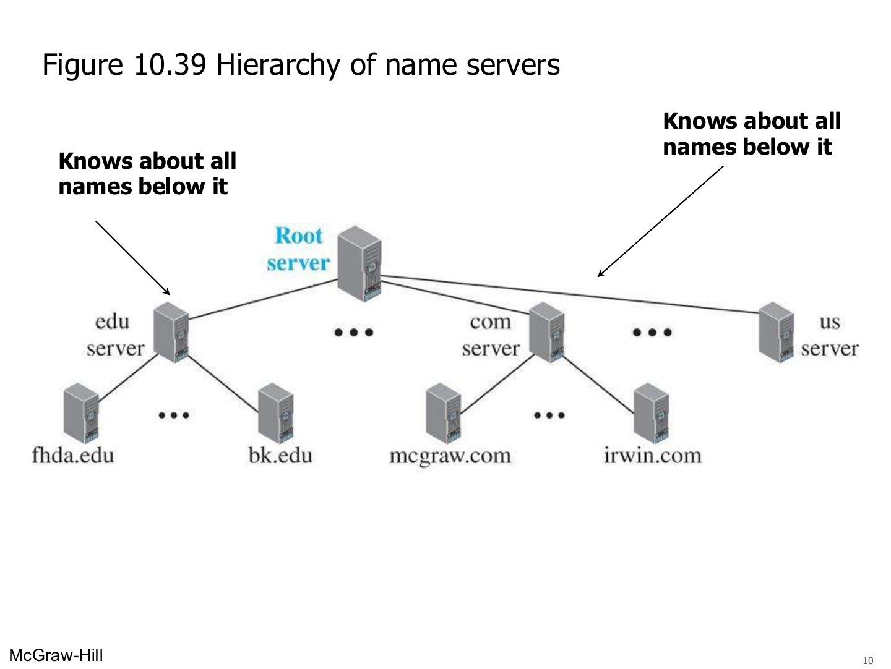
The name servers follow the shape of the name tree. At the top is the root server; below it, servers for the top-level domains (edu, com, us…); below those, servers for individual domains (fhda.edu, bk.edu, mcgraw.com, irwin.com). Each server is responsible for its part of the tree and knows how to reach the servers below it.
In the hierarchy of name servers, what is directly below the root server?
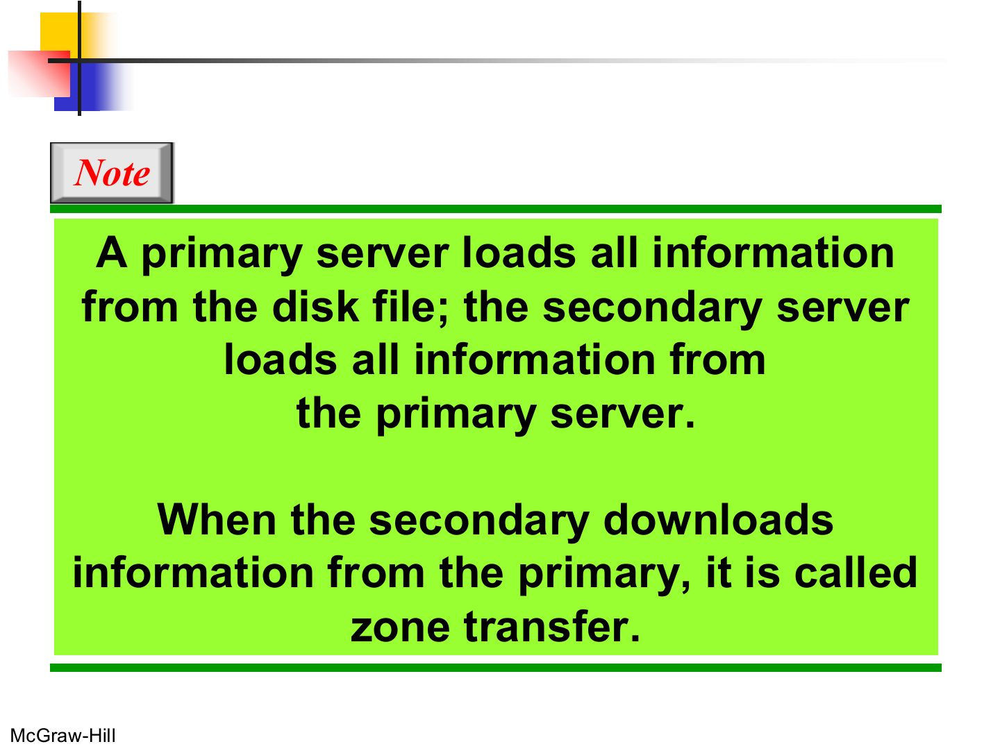
A domain usually has two kinds of name server. The primary server loads all its information from a disk file on its own machine; it is where the domain’s records are created and updated. The secondary server loads all its information from the primary server, keeping a copy so the domain still works if the primary fails or is overloaded. When the secondary downloads the information from the primary, that is called a zone transfer.
A secondary DNS server downloading data from the primary is called:
Where does a primary server load its information from?
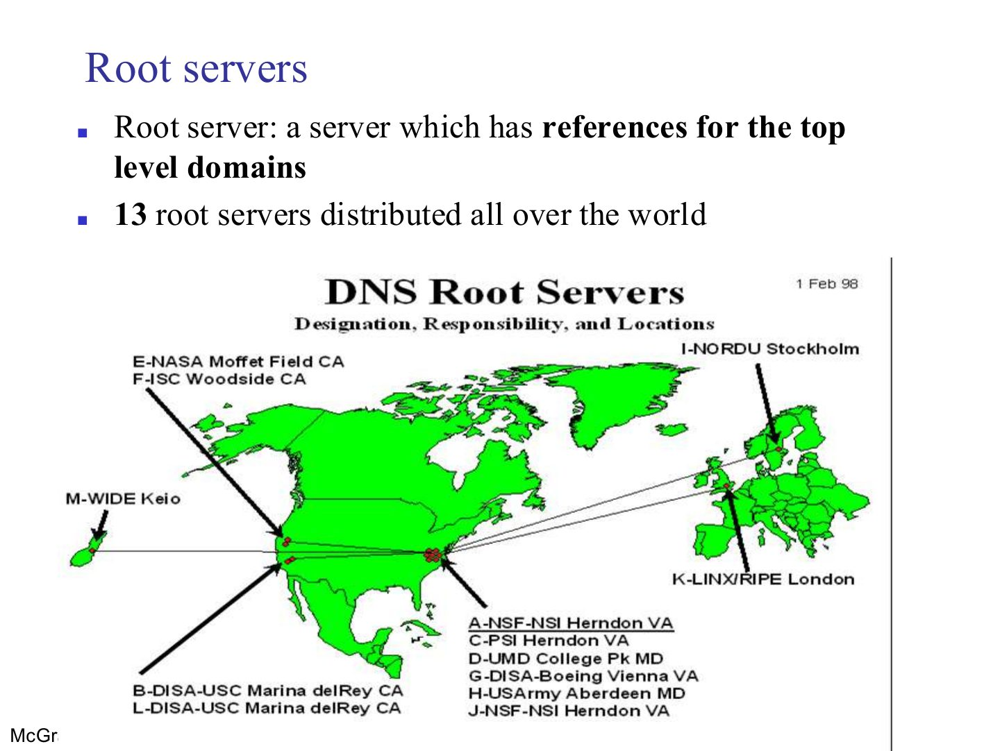
A root server holds references to the top-level domain servers: it doesn’t know every name, but it knows which server is responsible for com, for sa, for edu, and so on. There are 13 root servers (named A to M), distributed all over the world (each is actually many machines sharing one address).
How many root servers are there in the slides?
What does a root server hold?
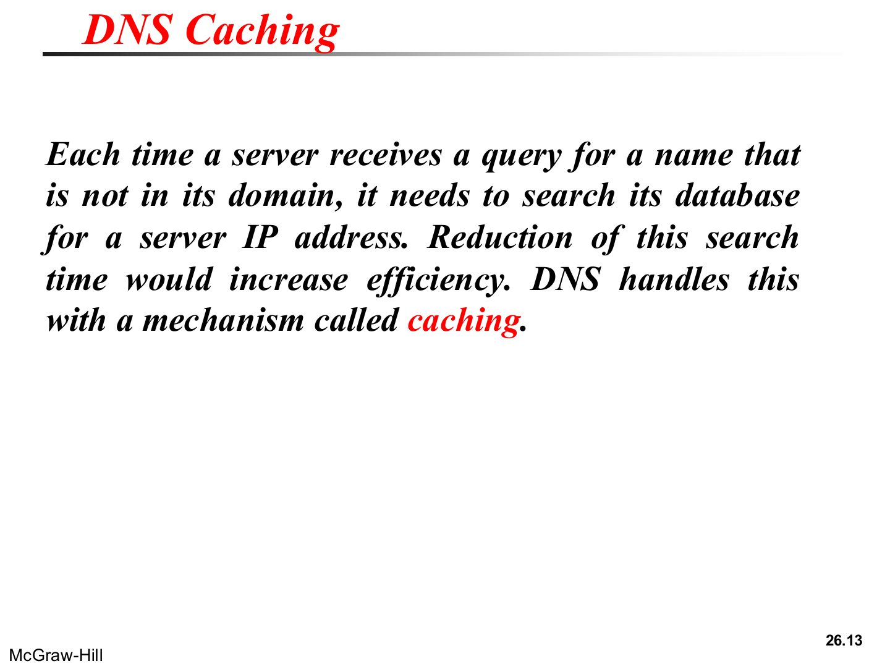
Every time a server gets a query for a name outside its own domain, it would have to search for the right server, which takes time. DNS reduces this with caching: when a server receives an answer, it remembers it for a while. The next time anyone asks for the same name, it can answer straight from its cache. (Cached answers expire after a set time, so out-of-date information doesn’t last forever.)
DNS caching means:
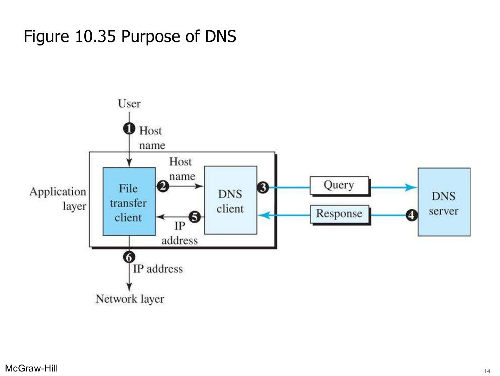
How an application uses DNS: a program such as a file transfer client has a host name but needs an IP address. It passes the name to the DNS client on the same machine; the DNS client sends a query to a DNS server, receives a response with the IP address, and returns the address to the program, which can then open the connection.
In the figure, who sends the query to the DNS server?
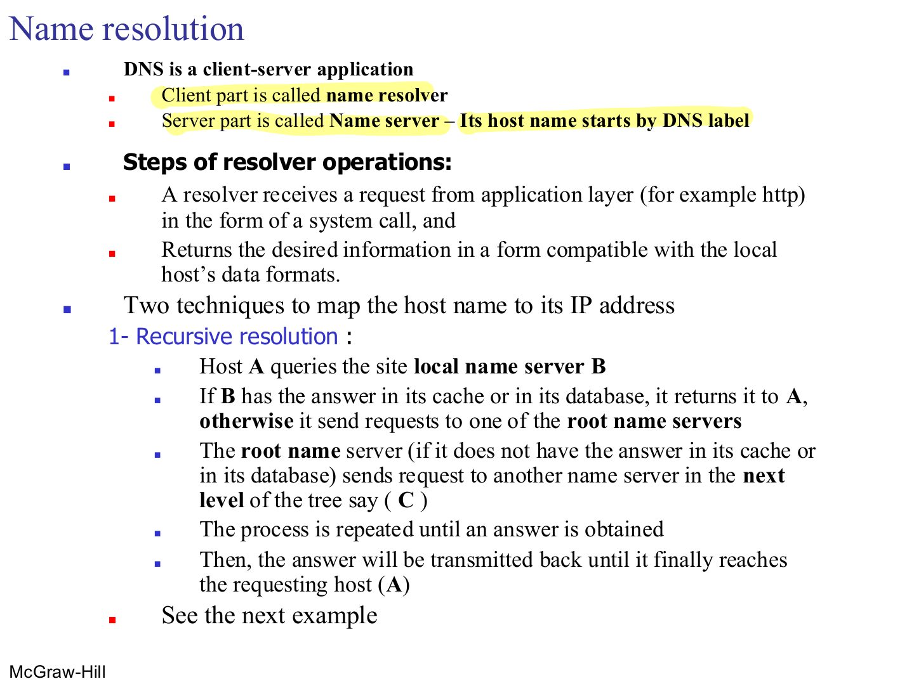
DNS is a client-server application. The client part is the resolver; the server part is the name server (whose host name typically starts with the label “DNS”, as in DNS.psu.edu.sa).
The resolver receives a request from an application-layer program (such as HTTP) as a system call, and returns the answer in a format the local host can use. There are two ways to resolve a name. The first is recursive resolution: host A asks its local name server B. If B has the answer in its cache or database, it replies. Otherwise B asks a root server; if the root doesn’t know, it asks a server at the next level (C) itself, and so on down the tree until some server has the answer. The answer is then passed back along the same chain to host A. In recursive resolution, each server takes over the job of finding the answer for the one that asked it.
The client part of DNS is called the:
In recursive resolution, what does the local name server do if it doesn’t know the answer?
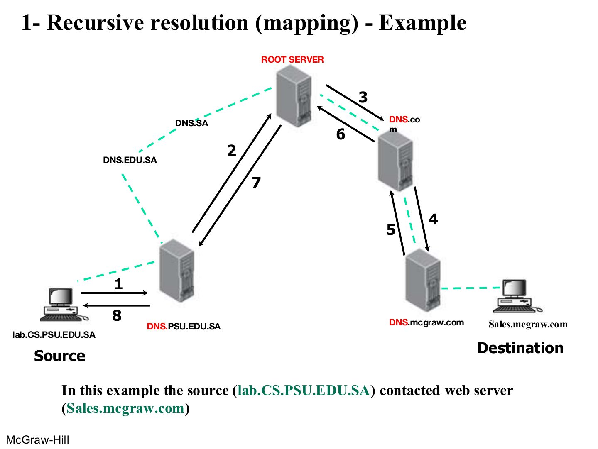
The example: host lab.CS.PSU.EDU.SA wants the IP address of the web server Sales.mcgraw.com. In steps 1 to 4 the query is passed along: the host asks DNS.PSU.EDU.SA, which asks the root, which asks DNS.com, which asks DNS.mcgraw.com. In steps 5 to 8 the answer comes back the same way, server by server, to the host.
In the recursive example, how does the answer reach the host?
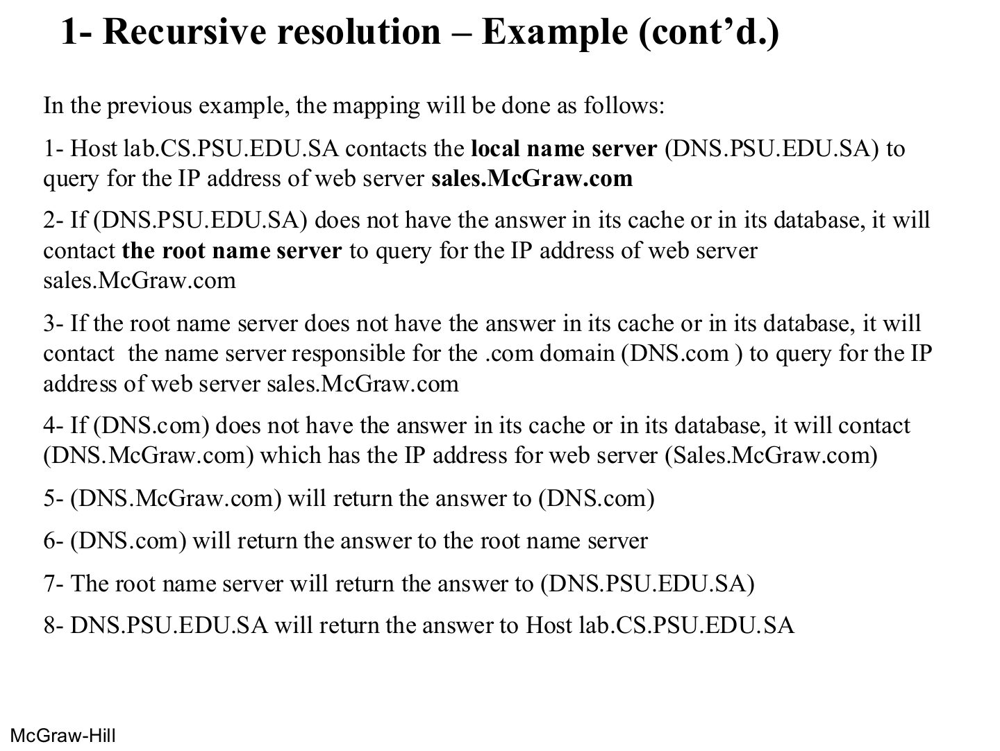
The steps in words: (1) the host asks its local name server, DNS.PSU.EDU.SA. (2) It doesn’t know, so it asks the root server. (3) The root doesn’t know, so the root asks DNS.com. (4) DNS.com doesn’t know, so it asks DNS.McGraw.com, which has the answer. (5–8) DNS.McGraw.com answers DNS.com, which answers the root, which answers the local server, which answers the host. The key point: each server asks the next one on behalf of the server that asked it.
In RECURSIVE resolution for sales.mcgraw.com from lab.CS.PSU.EDU.SA, who contacts DNS.com?
The root name server. In recursive resolution the local server asks the root, the root asks DNS.com, and DNS.com asks DNS.McGraw.com; the answer then flows back through each of them to the host.
In the recursive example, which server finally has the answer?
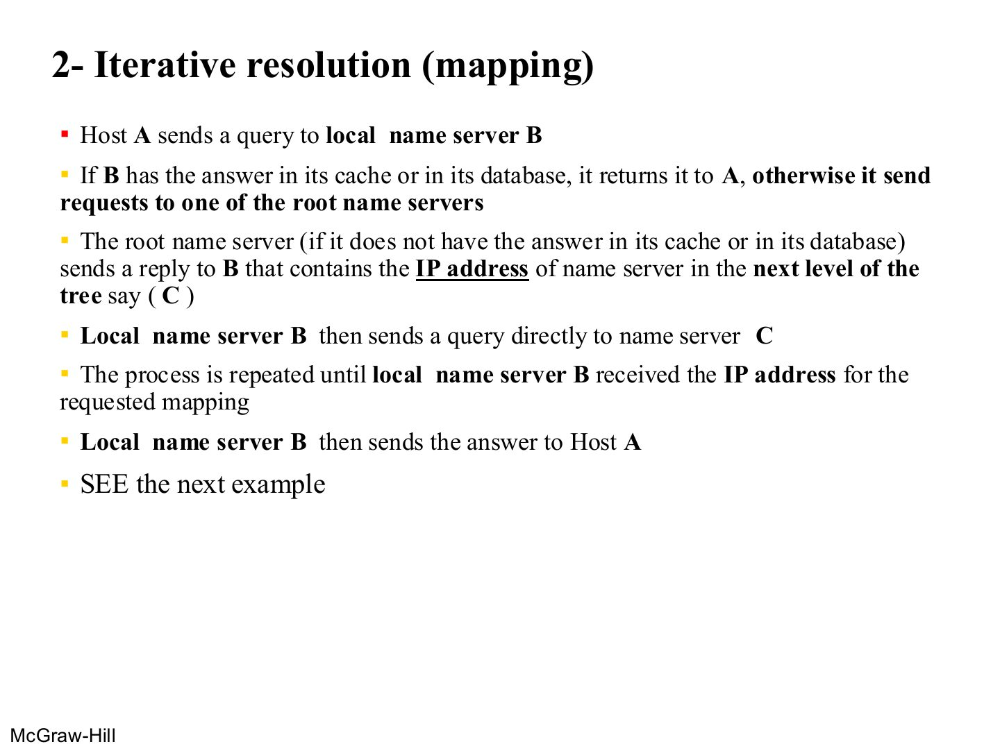
The second technique is iterative resolution. Host A asks its local name server B. If B doesn’t have the answer, it asks a root server. But this time, a root server that doesn’t know the answer doesn’t ask anyone else. It replies to B with the IP address of the name server at the next level (C): in effect, “I don’t know, ask C”. The local name server B then sends its query directly to C, and the process repeats: each server either answers or gives B the address of the next one, until B gets the IP address that was asked for. Finally B sends the answer to host A. The difference from recursive: in iterative resolution the local server does all the asking, and the other servers only give referrals. Memory aid: recursive = “I’ll find out for you”; iterative = “ask him instead”.
Memory trick Recursive = “I’ll find out for you.” Iterative = “Ask him instead.”
Trap In iterative resolution the root never contacts DNS.com; it only tells the local server where DNS.com is.
In iterative resolution, the root server answers the local server with:
Compare recursive and iterative DNS resolution.
Recursive: each server that lacks the answer queries the next server itself, and the answer is passed back along the same chain. Iterative: a server that lacks the answer replies with the address of the next server to ask, and the local name server sends each query itself until it gets the mapping, then answers the host.
In iterative resolution, the root server contacts DNS.com on the local server’s behalf.
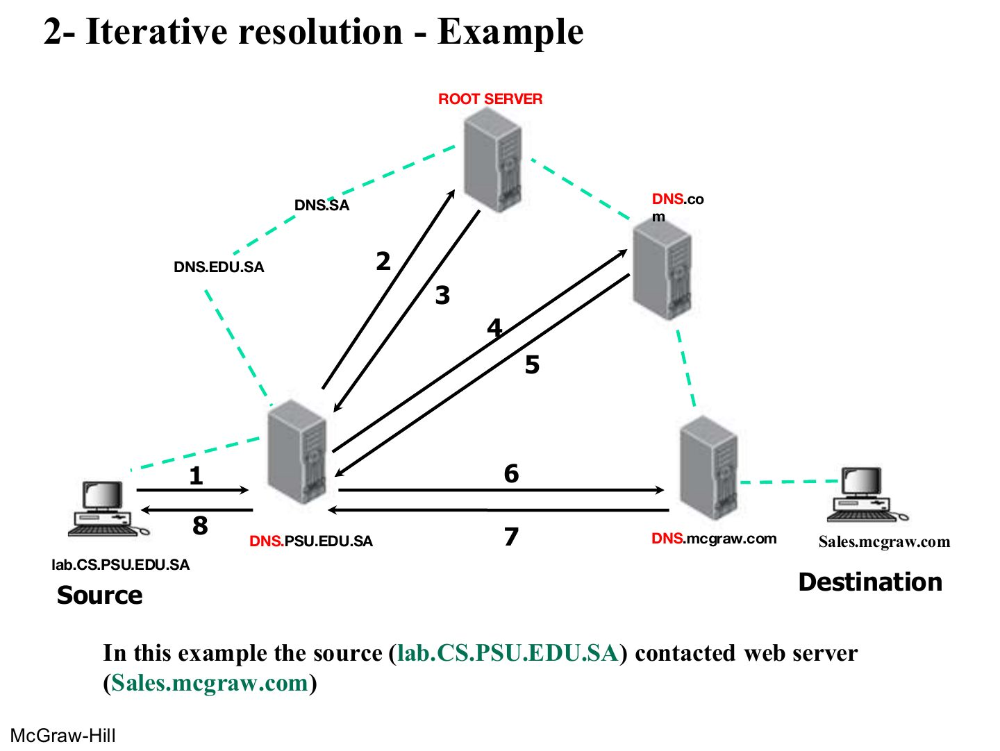
The same lookup done iteratively: the local server DNS.PSU.EDU.SA queries the root (steps 2–3), which refers it to DNS.com; it then queries DNS.com (4–5), which refers it to DNS.mcgraw.com; it then queries DNS.mcgraw.com (6–7), which gives the answer; and it answers the host (8). Every arrow starts or ends at the local server: the root never talks to DNS.com.
In the iterative figure, every arrow starts or ends at:
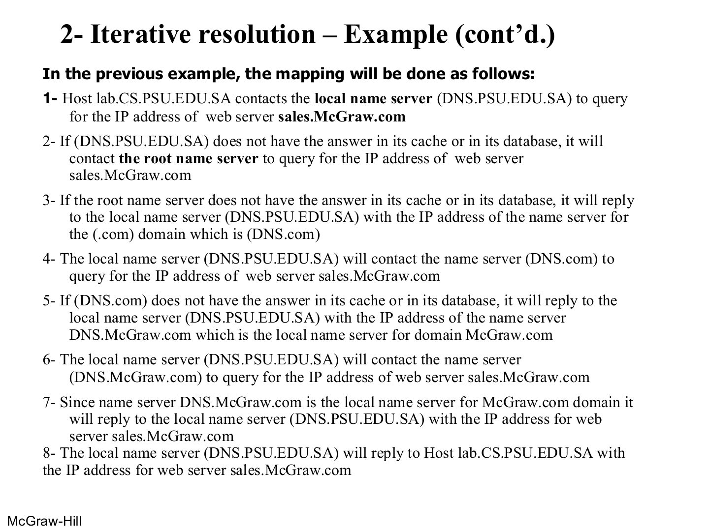
The steps in words: (1) the host asks the local server. (2) The local server asks the root. (3) The root replies with the address of DNS.com. (4) The local server asks DNS.com. (5) DNS.com replies with the address of DNS.McGraw.com. (6) The local server asks DNS.McGraw.com. (7) DNS.McGraw.com, being responsible for McGraw.com, replies with the IP address of sales.McGraw.com. (8) The local server gives it to the host. So the local server sent three queries itself (root, DNS.com, DNS.McGraw.com).
In the iterative example, which server sends the query to DNS.McGraw.com?
How many queries does the local server send in the iterative example?
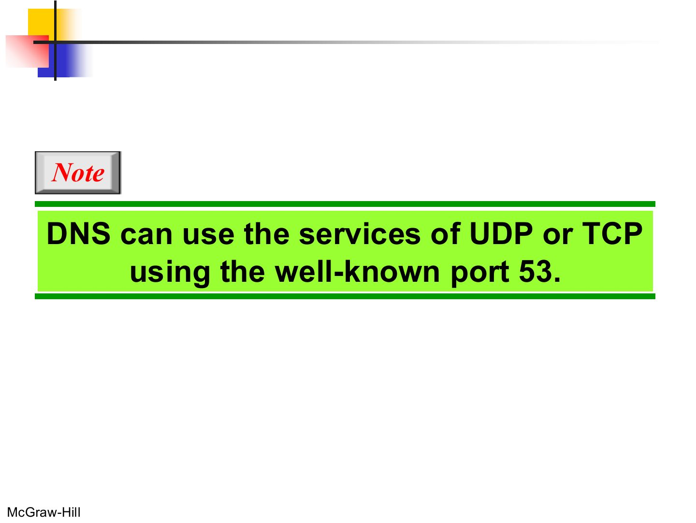
DNS can use either UDP or TCP, on the well-known port 53. Normal lookups use UDP, because a query and its answer are each short enough to fit in one datagram (Chapter 9); TCP is used for large transfers such as zone transfers between primary and secondary servers.
Seen again Ch 9, slide 46: Why DNS fits UDP
DNS uses well-known port:
Normal DNS queries use which transport protocol?